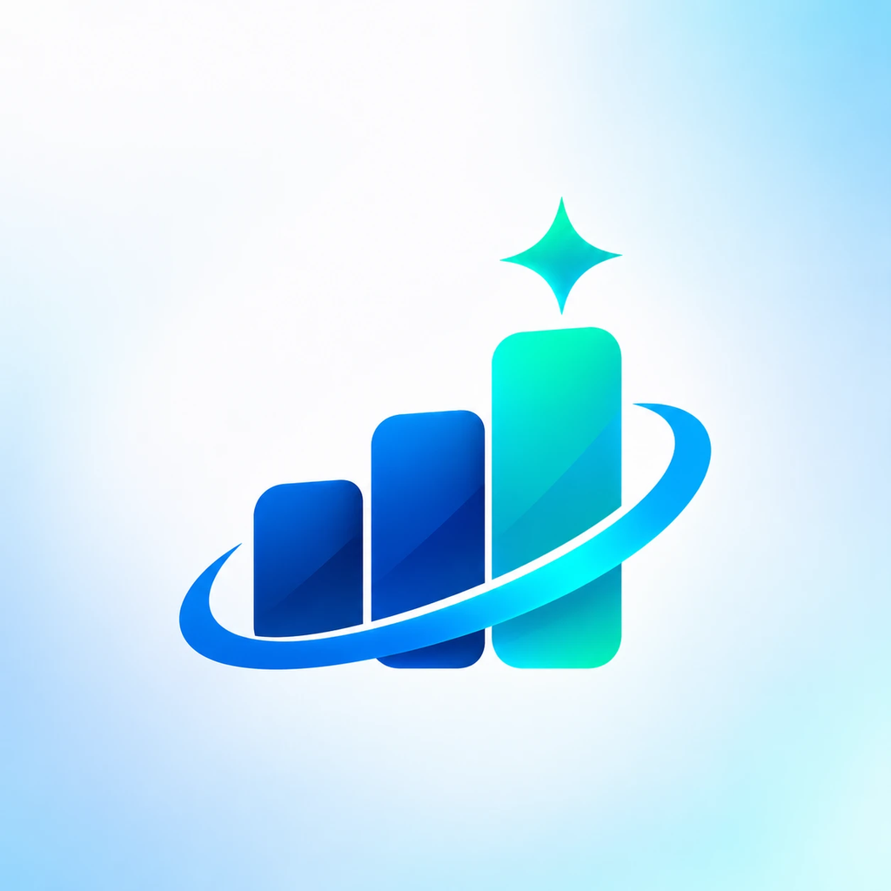

UZEX AI HACKATHON 2026 · SARALASH BOSQICHI
UZEX AI-agent — yechim tavsifi
Birja bitimlari haqidagi savollarga oʻzbek va rus tilida, faqat maʼlumotlar asosida javob beruvchi AI-agent
Telegram: @XG_tech_botVeb: uzex-ai-agent.onrender.com
500 000bitim, 2022–2026
22 / 22test savoli toʻgʻri
3–20 sjavob vaqti
UZ · RUlotin, kirill, rus
0oʻylab topilgan raqam
1Gʻoya
Agent javobni «oʻylab» topmaydi. U savolni maʼlumotlar bazasiga SQL-soʻrovga aylantiradi, soʻrovni bajaradi va faqat olingan natija asosida javob yozadi. Javobdagi har bir raqam kod darajasida avtomatik tekshiriladi, javob asosi (SQL soʻrovlar) esa foydalanuvchiga koʻrsatiladi. Maʼlumotda javob boʻlmasa, agent buni ochiq aytadi.
💬 SavolUZ (lotin/kirill) yoki RU, erkin shaklda
→
🔍 Nomlarni topishkompaniya, tovar, broker: kirill ⇄ lotin, fuzzy
→
🗄️ SQL-soʻrovDuckDB, 500 000 bitim, aniq hisob
→
✅ Tekshiruvhar bir raqam SQL natijasi bilan solishtiriladi
→
📊 Javob + asosaniq raqam, nom, STIR + SQL + grafik
2Maʼlumotlar qanday ishlatiladi: SQL, RAG emas
Text-to-SQL (biz tanlagan usul)
- CSV fayllar bir marta DuckDB bazasiga yuklanadi (38 MB, ~6 s). Raqamlar va sanalar toʻgʻri turlarga oʻtkaziladi.
- README dagi formulalar oldindan hisoblanadi: hajm = miqdor × lot, birlik narxi, valyuta, bitim kunidagi kurs boʻyicha soʻmdagi va dollardagi summa.
- LLM har bir savolga SQL yozadi. Baza yigʻindi, oʻrtacha, reyting, filtr amallarini 500 000 qator ustida aniq bajaradi.
- Natija — aniq raqamlar. LLM ularni faqat matnga aylantiradi.
Nega RAG emas?
- RAG (vektor qidiruv) bir nechta oʻxshash matn boʻlagini topadi, lekin 500 000 bitimni qoʻsha olmaydi: «2024-yildagi jami summa» kabi savollarga aniq javob bera olmaydi.
- Savollar asosan agregatsiya, reyting va filtrga oid, bu SQL ning aynan vazifasi.
- SQL natijasini tekshirish va koʻrsatish mumkin: komissiya javob nimaga asoslanganini koʻradi.
- Fuzzy-qidiruv faqat nomlarni topish uchun ishlatiladi (STIR, broker kodi, TN VED kodiga bogʻlash).
-- Masalan (soddalashtirilgan): «Qaysi viloyatda eksport bitimlari eng koʻp?» savoli uchun soʻrov
SELECT region, count(*) AS n, sum(amount_usd) AS usd
FROM deals WHERE contract_type = 'Экспортный'
GROUP BY region ORDER BY n DESC LIMIT 10; → Surxondaryo viloyati: 2 110 bitim, 497 215 428,57 USD
3Arxitektura
Komponentlar
- Maʼlumotlar qatlami: DuckDB (faqat oʻqish), bitimlar jadvali sotuvchi, xaridor, broker, tovar va valyuta bilan boyitilgan.
- Nomlarni moslashtirish: transliteratsiya + Jaro-Winkler.
Harayom Kimyo → "ҲАРАЙЎМ КИМЁ" МЧЖ; Хлопок сырец / Хлопок-сырец / ХЛОПОК-СЫРЕЦ birlashtiriladi.
- Agent: tool calling (
find_entity, run_sql), 10 tagacha qadam, 80 s limit.
- Interfeys: Telegram-bot (menyu tugmalari, bir bosishli namuna savollar) va veb-ilova (dashboard, grafiklar, chat).
- Xotira va jurnal: PostgreSQL (Supabase): davomli savollar uchun oxirgi 2 ta savol-javob va barcha savollar jurnali.
LLM zanjiri (avtomatik zaxira)
Claude Sonnet 5.5→Gemini 3.5 Flash→Gemini 3 Flash→Flash-Lite→boshqa kalitlar→Groq gpt-oss-120b
Limit tugasa yoki xato boʻlsa, soʻrov oʻsha zahoti keyingi modelga oʻtadi; foydalanuvchi buni sezmaydi. Barcha modellar bitta OpenAI-compatible tool-calling sikli bilan ishlaydi.
Doimiy ishlash
Render (bulut) + har 10 daqiqada self-ping + UptimeRobot monitoring. Oʻrnatish va roʻyxatdan oʻtish talab qilinmaydi.
4Javoblar qanday tekshiriladi (gallyutsinatsiyaga qarshi)
- Maʼlumotsiz javob yoʻq: birorta muvaffaqiyatli SQL soʻrovsiz berilgan javob rad etiladi.
- Raqamlarni avtomatik tekshirish: javobdagi har bir raqam SQL natijalari bilan solishtiriladi (yaxlitlash, %, kg↔t hisobga olinadi). Tasdiqlanmagan raqam boʻlsa, javob yuborilmaydi va model uni tekshirishga majburlanadi.
- «Maʼlumotda javob yoʻq»: boshqa yil, bazada yoʻq tovar yoki maydon soʻralsa, agent buni ochiq aytadi.
- Biznes-qoidalar: turli valyutadagi summalar va turli oʻlchov birligidagi hajmlar qoʻshilmaydi; bekor qilingan bitimlar alohida koʻrsatiladi; nomlar bazadagidek aynan yoziladi.
- Xavfsizlik: faqat SELECT, 20 s timeout, 50 qator limiti.
- Shaffoflik: har javob ostida SQL soʻrovlar, qatorlar soni, model va vaqt koʻrsatiladi.
5Sinov natijalari
22 ta savol (rus, oʻzbek lotin va kirill) qoʻlda yozilgan SQL natijalari bilan solishtirildi. Hammasi toʻgʻri.
| Savol | Toʻgʻri qiymat (SQL) | |
|---|
| 2025-yilda eng koʻp bitim tuzgan sotuvchi kim? | "Kinen Energo" MChJ — 2 877 bitim | ✓ |
| Какая общая сумма сделок по карбамиду в 2024 году? | 783 791 022 615 soʻm (3 ta yozilish varianti) | ✓ |
| Qaysi viloyatda eksport bitimlari eng koʻp? | Surxondaryo — 2 110 bitim, 497 215 428,57 USD | ✓ |
| 2025 йилда портландцементнинг ўртача нархи қанча? | 951 319,67 сўм/тонна (javob kirillda) | ✓ |
| Harayom Kimyo sotuvchi sifatida nechta bitim tuzgan? | "ҲАРАЙЎМ КИМЁ" МЧЖ — 10 608 (lotin → kirill) | ✓ |
| Кто купил больше всего хлопка-сырца в 2025 году? | "Zoket Invest" OK — 103 545 907 kg | ✓ |
| 2026-yilda nechta bitim bekor qilingan? | 6 266 (02.01–26.10.2026) | ✓ |
| Сколько контрактов зарегистрировано в 2023 году? | 1 062 (shartnomalar jadvalidan) | ✓ |
| Средний рост цены от стартовой по бензину, 2026? | 3,21 % (4 298 bitim) | ✓ |
| Tuzoq: telefon raqami · 2021-yil · oltin | «Maʼlumotlarda javob yoʻq» + nima borligi | ✓ |
Sinovda topilib tuzatilgan 6 ta kamchilik: javob tili, nomlarni transliteratsiya qilish, shartnomalar sonini notoʻgʻri jadvaldan olish, tekshirilmagan daʼvo, bekor qilingan bitimlarni jimgina chiqarib tashlash, tovar variantini tushirib qoldirish. Toʻliq roʻyxat: tests/RESULTS.md.
6Tezlik va ishonchlilik
| Savol turi | Qanday ishlanadi | Vaqt |
|---|
| Salomlashish, «Sen kimsan?», «Rahmat» | Tayyor javob — bazaga ham, AI ga ham murojaat qilinmaydi | 0 s |
| Mavzudan tashqari (ob-havo, siyosat…) | SQL ishlatilmaydi; «bu maʼlumot reyestrda yoʻq» deb ochiq aytiladi | ~2 s |
| Maʼlumot savoli | Odatda bitta SQL soʻrov: asosiy raqam, bekor qilinganlarsiz raqam va top-3 bir yoʻla hisoblanadi | 3–8 s |
| Takroriy savol / namuna tugmasi | Kesh (maʼlumotlar oʻzgarmaydi) — PostgreSQL da saqlanadi, server qayta ishga tushsa ham saqlanib qoladi | 0 s |
Bitta modelda limit tugasa yoki xato boʻlsa, soʻrov avtomatik ravishda keyingi modelga oʻtadi (Claude → Gemini → Groq). Javobga ichki limit — 80 s (komissiya talabi — 90 s).
7Qanday foydalaniladi
Telegram-bot: @XG_tech_bot
/start — salomlashish va namuna savollar (bir bosishda javob)- Pastki menyu: 💡 Namuna savollar · ℹ️ Bot haqida · 🆕 Yangi suhbat · 🌐 Veb-versiya
- Savolni oʻzbek (lotin/kirill) yoki rus tilida erkin yozing
- Javob ostidagi 🔎 blokni bosing — SQL asos ochiladi
Veb-ilova: uzex-ai-agent.onrender.com
- Roʻyxatdan oʻtishsiz, brauzerda ishlaydi; UZ / RU interfeys
- Reyestr boʻyicha KPI va grafiklar (yillar, oylar, kategoriyalar, viloyatlar)
- AI-chat: javob + avtomatik grafik + «Javob asosi» (SQL)
- REST API:
POST /api/ask, GET /api/stats
8Interfeys
Veb-ilova: dashboard, grafiklar va AI-chat
KPI kartalar, yillik va oylik dinamika, kategoriyalar, viloyatlar. Javob ostida avtomatik grafik, model, vaqt va «SQL bilan tasdiqlangan» belgisi.
Telegram-bot @XG_tech_bot
Eksport: yetakchi viloyat va keyingi oʻrinlar
2025-yilning eng faol sotuvchisi
2026-yilda bekor qilingan bitimlar
Har javob ostidagi 🔎 «Asos» blokida u qaysi SQL soʻrovlar asosida olingani koʻrsatiladi. Skrinshotlardagi barcha raqamlar qoʻlda SQL bilan tekshirildi.
9Texnologiyalar
Python 3.11 · DuckDB · FastAPI + Uvicorn · python-telegram-bot 21 (webhook) · Claude Sonnet 5.5 / Google Gemini / Groq (OpenAI-compatible tool calling) · PostgreSQL (Supabase) · Chart.js · Render (hosting) + UptimeRobot.